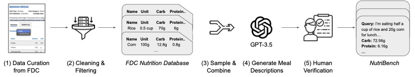
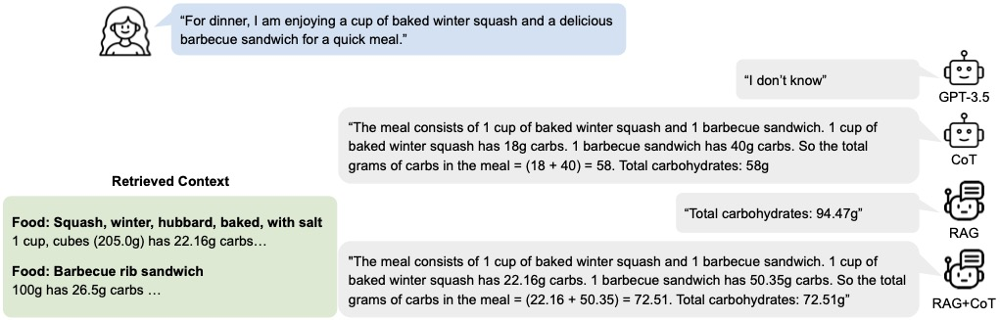
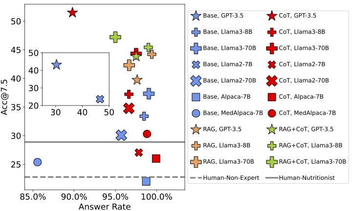

A Dataset for Evaluating Large Language Models in Carbohydrate Estimation from Meal Descriptions
Get the dataThe dataset consists of 5,000 human-verified meal descriptions with macro-nutrient labels, including carbohydrates, proteins, fats, and calories. NutriBench can be used to evaluate and benchmark Large Language Models (LLMs) on the task of nutrition estimation.
This video shows examples of NutriBench queries and responses by GPT-3.5 with Chain-of-Thought (CoT) prompting for carbohydrate estimation.
NutriBench is constructed from FoodData Central (FDC), the food composition information center of the US Department of Agriculture (USDA). We utilize GPT-3.5 to generate natural language meal descriptions from food items sampled from a cleaned and filtered FDC. We also conduct two rounds of human verification, which include manually inspecting and editing the queries, to ensure the quality of NutriBench.

This image shows the end-to-end construction pipeline of NutriBench.
NutriBench is divided into 15 subsets varying in complexity based on the number, servings, and popularity of the food items in the meals and the specificity of serving size descriptions. This ensures that the benchmark represents various challenging scenarios likely to be encountered in the real world.
We extensively evaluate and analyse the performance of GPT-3.5, Llama2-7B/70B, Llama3-8B/70B, Alpaca-7B, and MedAlpaca-7B using four prompting strategies:

This image shows the output by GPT-3.5 for the four prompting strategies for a NutriBench query.
Across all models, prompting methods, and data splits, we conducted 300 experiments to provide a comprehensive insight into the current capabilities of LLMs in nutrition estimation. We also conducted a human study involving expert and non-expert participants and found that LLMs can provide more accurate and faster predictions over a range of complex queries. GPT-3.5 with CoT prompting achieves the highest accuracy of 51.48%, with an answer rate of 89.80%.

This image summarizes the results of our experiments, plotting the accuracy (absolute error < 7g) and answer rate for all the methods on NutriBench.
For any questions, please contact the authors at {dongx1997,mdhaliwal}@ucsb.edu